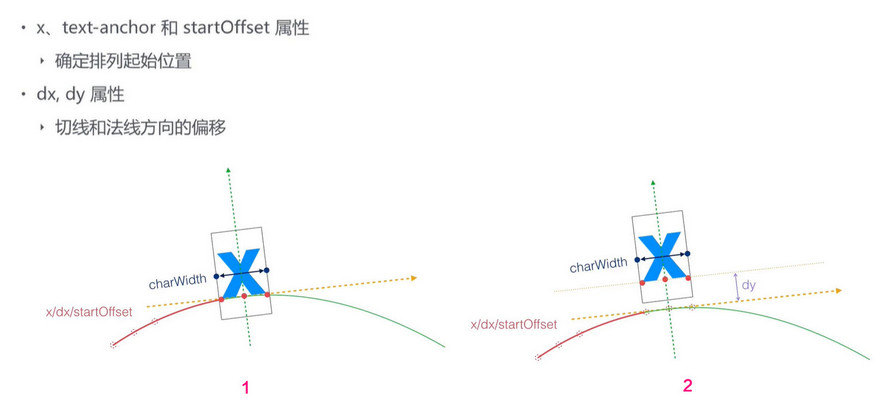

<text>除了笔直地绘制一行文字以外， SVG 也可以根据<path> 元素的形状来放置文字。 只要在textPath元素内部放置文本，并通过其xlink:href属性值引用<path>元素，我们就可以让文字块呈现在<path>元素给定的路径上了。
- startOffset - 定义在将路径转换为
元素的坐标系后，沿路径的初始当前文本位置从路径起点开始的偏移量。 - method - 指示应沿<textPath> 元素的路径呈现文本的方法。
- spacing - 定义字符之间的间距
- xlink:href - 对资源的引用定义为引用 IRI。该链接的确切含义取决于使用它的每个元素的上下文。
textPath元素中的相关属性：
textPath元素中的相关属性实例：
x位置：
，dy位置：
，startOffset偏移：
，水平对齐方式：
，垂直对齐方式：
，